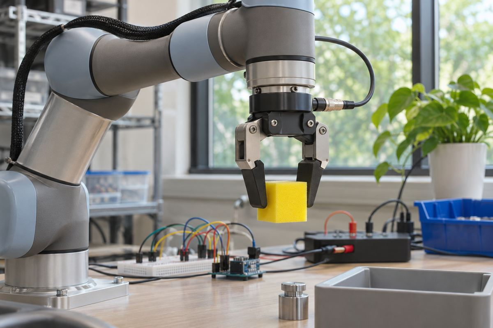

전자기기 / EXPLAINED
로봇 손의 미끄러짐을 읽는 반도체…마이크로칩 ATFCD52 공개
센서 배열에 따라 최대 800Hz로 데이터를 읽는다. 힘 계산과 그립 조정은 외부 처리기가 맡는다.

마이크로칩은 11월 10일 로봇의 촉각 센서용 정전용량 디지타이저 ATFCD52를 발표했다. 작은 격자 형태의 센서에서 정전용량 변화를 읽어 디지털 데이터로 바꾸는 부품이다. 회사는 배열 크기에 따라 최대 800Hz 프레임 속도를 지원하고 1펨토패럿보다 작은 변화를 구분하도록 설계했다고 설명했다. 제품은 마이크로칩이나 유통사를 통해 구매할 수 있다고 안내했다. 주문 가능 안내와 모든 지역의 실제 재고·배송일은 별도로 확인할 사안이다.
마이크로칩은 제어용 반도체와 개발 도구를 공급하는 기업이다. 이번 부품은 스스로 물체를 집는 완성 로봇 손이 아니라 센서 신호를 외부 처리기에 전달하는 회로다. 카메라로 물체 위치를 찾아도 손가락과 표면이 닿는 압력이나 미끄러지는 움직임을 알려면 접촉 정보를 읽어야 한다. 부드러운 물체는 너무 세게 잡으면 손상되고 너무 약하게 잡으면 떨어질 수 있어 제어에 사용할 신호가 중요해진다.
정전용량은 두 전극 사이에 전하를 저장하는 특성이다. 촉각 센서의 재료나 구조가 눌리며 변형되면 이 특성이 달라질 수 있다. ATFCD52는 이를 수치화하고, 외부 프로세서가 그 데이터로 표면에 수직인 힘과 옆 방향으로 작용하는 전단력을 계산할 수 있다는 설명이다. 센서 재료와 기구 구조, 보정 알고리즘은 전체 측정 성능에 영향을 준다. 작은 전기 변화가 읽힌다는 사양으로 모든 재료의 힘을 같은 정확도로 측정한다고 말할 수는 없다.
채널과 격자 지점은 다르게 센다
공식 사양은 최대 52채널, 송신 32선과 수신 20선 구성을 제시한다. 선들의 교차를 활용하는 2차원 배열이므로 채널 수를 곧바로 감지 지점 수로 바꾸면 안 된다. 수신 쪽에는 20개 병렬 아날로그 프런트엔드가 있어 여러 선을 동시에 읽는다. 최대 800Hz는 1초에 800프레임을 뜻하고 프레임 사이 간격은 계산상 약 1.25ms다. 이 값은 센서를 읽는 간격이며 로봇 모터가 힘을 바꾸기까지의 전체 지연을 말하지 않는다.
모터와 전력 회로가 만드는 잡음도 고려한다. 회사는 주파수 호핑과 오버샘플링을 이용해 간섭을 줄이는 구성을 설명했다. 오버샘플링은 더 자주 읽은 신호를 활용해 잡음을 다루는 방법이다. 실제 그립 반응에는 센서 획득 이후 통신, 힘 계산, 제어 명령과 모터 동작이 더해진다. 편집부의 해석으로는 빠른 센서가 제어의 한 단계를 개선할 수 있어도, 전체 장치의 낙하 방지 성능은 시스템 수준에서 시험해야 한다.
평가할 때는 잡을 물체의 무게뿐 아니라 표면과 형태도 맞춰야 한다. 같은 힘으로 눌러도 단단한 표면과 푹신한 표면에서 센서가 변형되는 양은 달라질 수 있다. 센서 데이터의 패턴과 실제 미끄러짐을 함께 기록해야 제어기의 판단이 맞았는지 비교할 수 있다.
평가에는 EV-ATFCD52 보드와 설정·실시간 기록 소프트웨어를 제공한다. 개발자는 배열 크기와 센서 적층 재료를 바꿔 잡음과 민감도를 비교할 수 있다. 발표에는 특정 로봇 손의 성공률이나 표준 물체별 힘 오차가 없다. 도입을 검토한다면 작은 전기 변화를 읽는 능력, 배열별 속도, 외부 계산기의 처리 시간과 기구 응답을 한 흐름으로 측정할 필요가 있다.